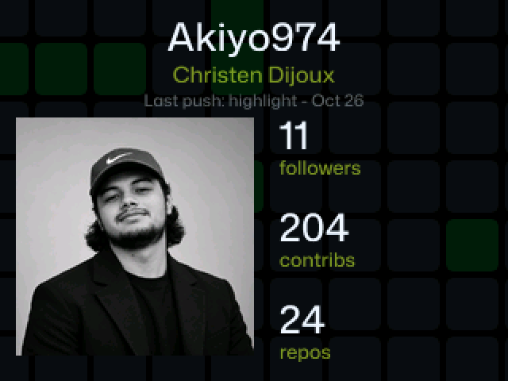
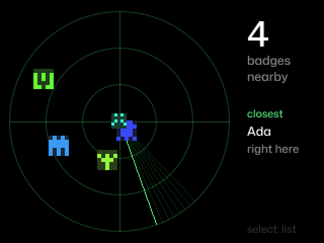
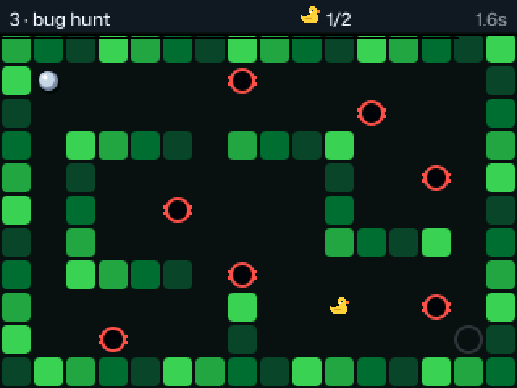
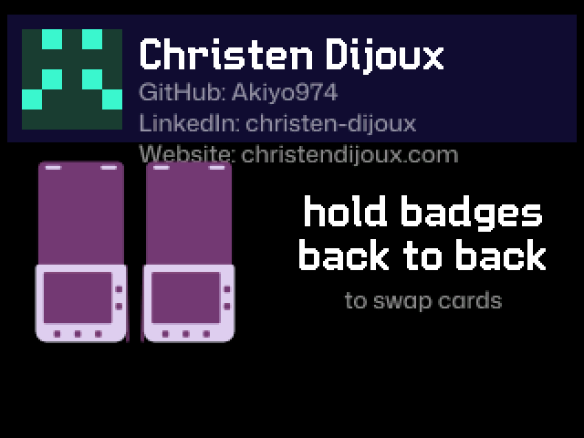
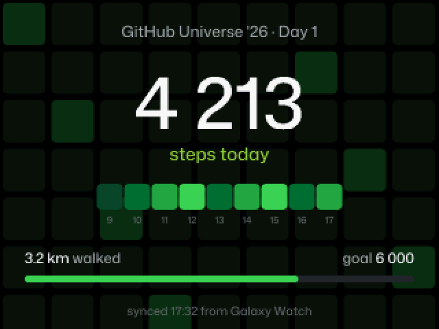
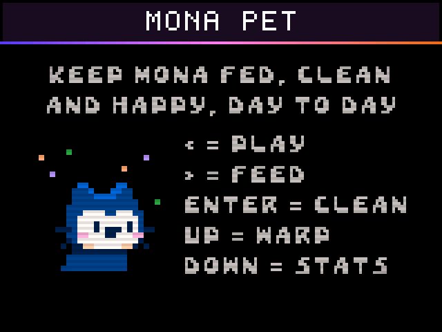

Your GitHub Universe badge, from the browser.
Apps, games and tools for the Badger 2350. Plug the badge in over USB and use Badge Studio to install apps, put your own versions of the built-in ones, reorder the home screen, change its settings and take screenshots. No install: Chrome or Edge is enough.

Badge Studio
App storeInstall, update and remove apps from the official badge apps and this repo. Every file is checked after it is written.
ExtensionsReplace a built-in app with another version, like the ones in this repo. The old one is backed up on the badge and can be put back.
Home screenDrag the apps into the order you want, pick the ones at the top, hide the others.
Settings, screenshots, consoleWi-Fi, GitHub name, contact card and NFC; screenshots of any app as PNG; the MicroPython REPL.
Apps





